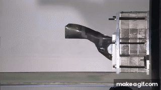

Encuesta sobre Fibra de Carbono

1. ¿Cuál es una de las principales propiedades de la fibra de carbono?
Alta resistencia y ligereza
Baja resistencia y alta densidad
Alta elasticidad y flexibilidad
2. ¿En qué proceso se convierte la fibra de poliacrilonitrilo (PAN) en fibra de carbono?
Carbonización
Oxidación
Curado
3. ¿Qué propiedad de la fibra de carbono la hace ideal para aplicaciones en aeronaves?
Ligereza
Alta densidad
Flexibilidad
4. ¿Cuál es uno de los principales desafíos de la fibra de carbono?
Costo alto
Reparación difícil
Baja resistencia a la corrosión
5. ¿En qué tipo de aplicaciones es común el uso de fibra de carbono?
Construcción de edificios
Equipamiento deportivo
Mobiliario urbano
6. ¿Cuál es uno de los beneficios de usar fibra de carbono en el sector automotriz?
Reducción de peso
Aumento de la resistencia al impacto
Mayor coste de producción
7. ¿Qué proceso se utiliza para tratar las fibras de carbono y mejorar su adhesión a las resinas?
Carbonización
Oxidación
Tratamiento de superficie
8. ¿Qué ventaja adicional ofrece la fibra de carbono en comparación con los metales tradicionales?
Resistencia a la corrosión
Mayor densidad
Menor rigidez
9. ¿Qué tipo de mantenimiento es necesario para la fibra de carbono?
Mantenimiento frecuente
Mantenimiento mínimo
Mantenimiento extensivo
10. ¿Cuál es una de las principales desventajas de la fibra de carbono?
Costo elevado
Poca resistencia
Pesadez
Enviar Encuesta
Regresar